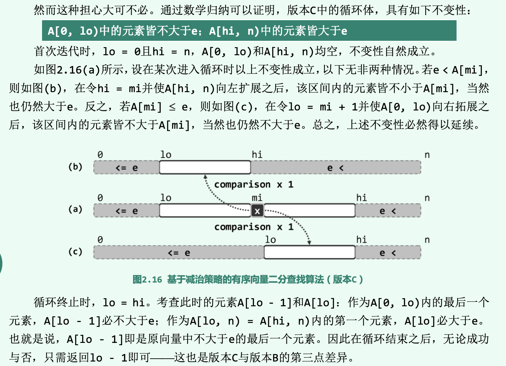
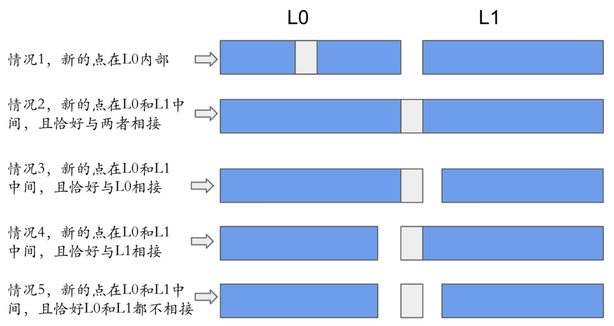

基础分析
减治：每次排除不符合要求的元素，搜索空间持续减少
标准模版：(当目标元素有多个的时候)
在[l, r)上找目标元素
1 | int l = 0, r = nums.size(); |
最后将数组分为两个部分，左边满足<= target target > 右边
最后循环结束后，l是右半部分的第一个元素，l-1是左半部分最后一个元素
另一种写法：
1 | int l = 0, r = nums.size() - 1; |
两种写法的三点不同：r的初始值，while循环条件，r的移动规则（l都是mid+1）参考
核心是让本次循环和上一次循环的查找范围既不重复，也不遗漏
网上总结关于二分的几种类型 https://www.cnblogs.com/grandyang/p/6854825.html
总结的很好：https://segmentfault.com/a/1190000016825704
基础题目
【LeetCode34】
1 | class Solution { |
二段性
二段性理解
二分的本质不是单调性，而是二段性 满足二段性的特征就可以使用二分法，不一定需要严格符合二分的要求
二段性也不仅仅是满足/不满足进行二分，一定满足/不一定满足也可以二分
【LeetCode 152】
这道题的二段性的含义：在以mid为分割点的数组中，根据nums[mid+1]和nums[mid]的大小关系，可以确定一段必然有解，另一段可能有解，可能无解
因此选择一段进行二分，能保证区间内一定有峰值
简单的理解：如果nums[mid - 1] < nums[mid]，那么说明mid处可能为峰值，而mid-1处肯定不是峰值，因此在右半边继续找（需要注意因为要取到mid-1，所以l的初始值设为1）
1 | class Solution { |
或者
由于下面要取mid+1，这种解法r最大能取到n-2
1 | class Solution { |
【LeetCode33】搜索旋转数组
1 | class Solution { |
需要明确一个规律，对于旋转数组，从任意一个地方切分，有一边的数组一定有序，另一边可能有序，可能无序
在每次二分中，先判断该区间是否有序，以及target是否在这段区间。然后可以在有序区间内二分查找，无序部分再进行切分，以此不断缩小搜索范围
其他思路：先判断target在左边还是右边，把另外一侧改为+Inf和-Inf。（主要是这个赋值的过程可以在二分的时候顺便完成的写法比较有趣）
【LeetCode 852】找出极值点 满足/不满足的二分
二段性：峰值左侧满足递增，右侧不满足，右侧满足递减，左侧不满足
1 | class Solution { |
如果是arr[mid]和arr[mid + 1]比较，最后返回l
【LeetCode4】
这道题和找出第k小的数字思路是一样的
递归方法：
1 | class Solution { |
时间复杂度分析：每进行一次循环，就减少k/2个元素，所以时间复杂度为O(logK)，k = (m+n)/2，所以复杂度也就是O(log(m+n))
参考：
【LeetCode 352】
相当于对于每个val，要找到离val最近的两个区间。(图片和下面代码的情况不对应)
1 | class SummaryRanges { |
题目补充
【LeetCode 274】
【LeetCode 275】
【LeetCode 33】